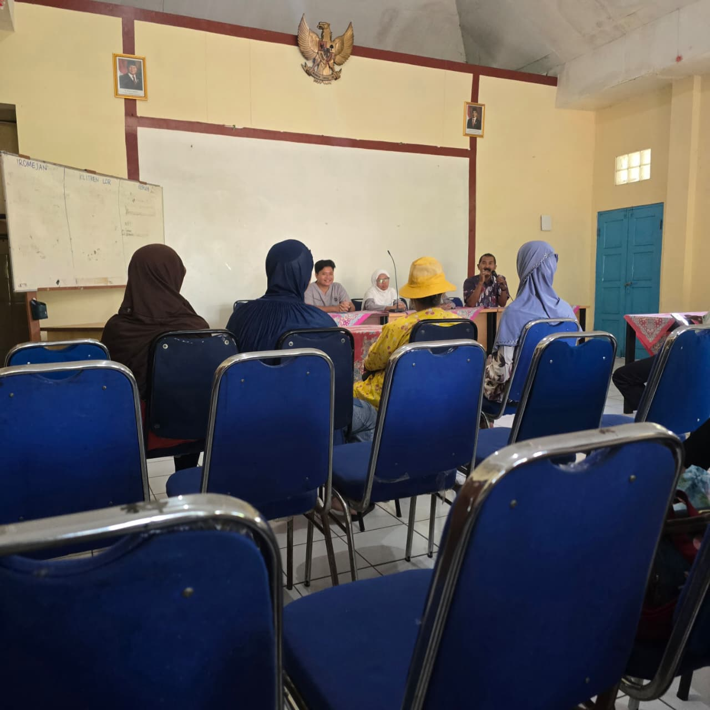
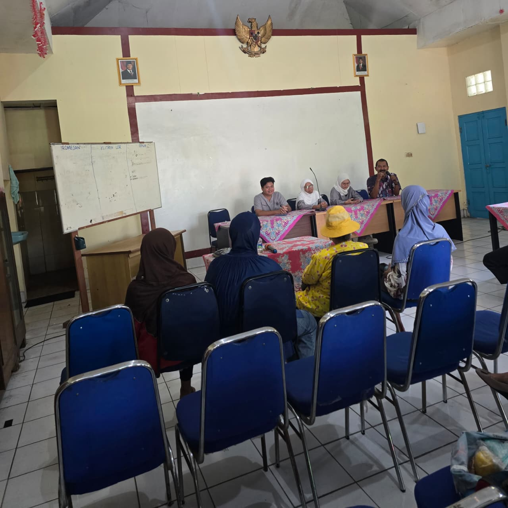
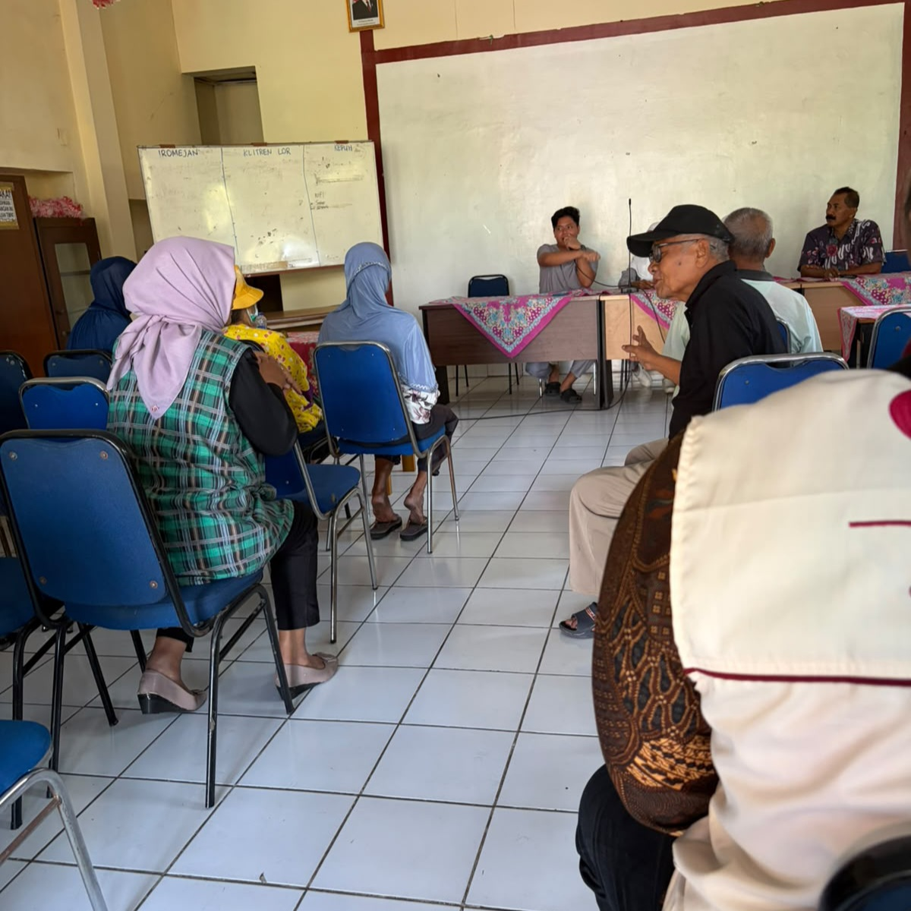
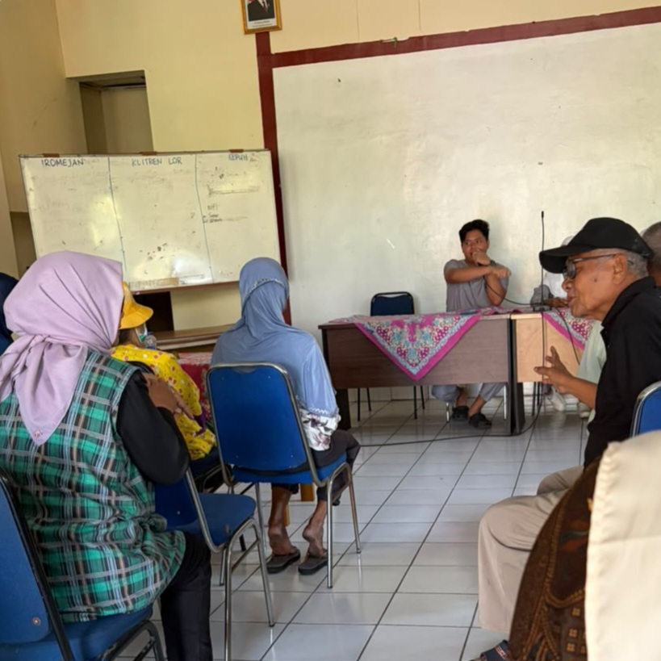

Lansia RW 16
Program pemberdayaan dan kesehatan bagi warga lanjut usia di lingkungan RW 16 untuk mewujudkan masa tua yang aktif, sehat, dan bahagia.

info Tentang Lansia RW 16
Kelompok Lansia RW 16 merupakan wadah silaturahmi dan pemberdayaan bagi warga lanjut usia. Kami berfokus pada peningkatan kualitas hidup melalui berbagai kegiatan rutin yang mendukung kesehatan fisik dan mental, serta mempererat ikatan kekeluargaan antar warga senior di lingkungan RW 16.
event Informasi Kegiatan
Kegiatan Utama
Senam Sehat
Kegiatan aktivitas fisik rutin untuk menjaga kebugaran jantung dan persendian lansia.
Cek Kesehatan
Pemeriksaan tekanan darah, gula darah, dan konsultasi kesehatan berkala.
Silaturahmi & Kreativitas
Pertemuan rutin untuk berbagi pengalaman, edukasi nutrisi, dan pelatihan keterampilan ringan.
photo_library Galeri Kegiatan

Cek Kesehatan Rutin

Senam Pagi Bersama

Kegiatan Keterampilan

Edukasi Gizi Lansia